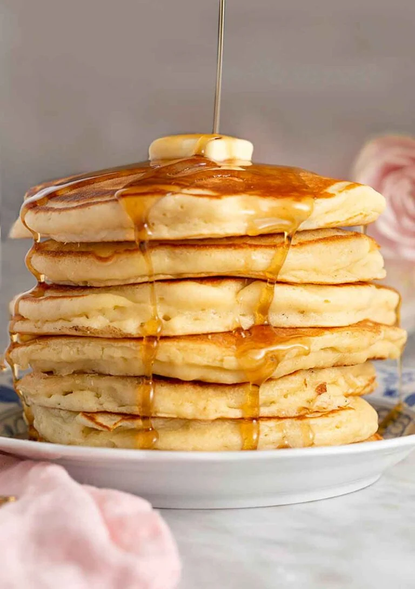

Pancake

Nothing beats a big stack of this fluffy homemade Pancake recipe!
They are so light and fluffy and use simple ingredients you probably have in your kitchen right now!
Ingredients
- 1⅓ cups all-purpose flour (160g)
- 1 tablespoon baking powder
- 2 tablespoons granulated sugar
- 1 teaspoon salt
- 1 cup milk (240ml)
- 1 large egg
- 4 tbsp Butter melted
- 2 tsp vanilla extract
Method
- Whisk the flour, sugar, baking powder, and salt in a large bowl.
- In a medium bowl whisk together the milk, egg, melted butter and vanilla together until well combined.
- Pour the milk mixture into the flour and fold together just until combined. (It's okay if there are a few small lumps in the batter. This actually helps make fluffier pancakes!)
- Heat a large skillet or griddle over medium-high heat. Once hot, rub or brush with butter to lightly grease the pan. Working in batches, add ¼ cup of batter for each pancake.
- Cook for a few minutes until golden on the bottom and bubbles start to appear on the top, then flip over and cook an additional minute or until golden brown. Add more butter with each new batch of pancakes. Serve hot with butter and a drizzle of maple syrup.